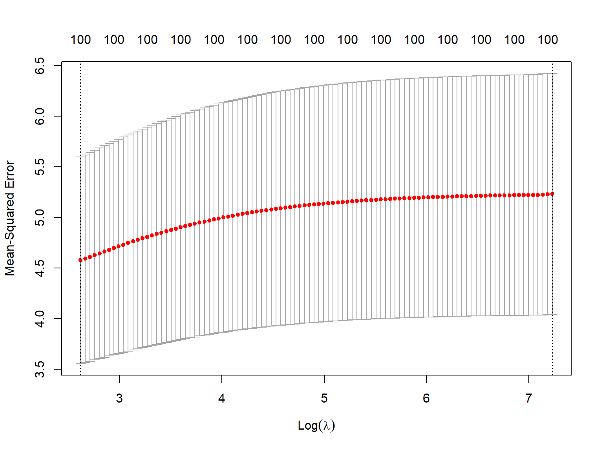

Code
library(tidyverse)
library(glmnet)
library(caret)
library(recipes)
set.seed(123)Jong-Hoon Kim
February 2, 2025
Regularization is a fundamental technique in statistical modeling that helps prevent overfitting and improves model generalization. This blog post explores different regularization methods, their implementation in R, and their practical applications, with a special focus on scenarios where the number of parameters exceeds the number of observations (p > n).
Regularization works by adding a penalty term to the model’s loss function, effectively constraining the magnitude of model coefficients. The three most common types are:
Let’s first create a scenario where we have more parameters than observations:
# Generate synthetic data
n <- 50 # number of observations
p <- 100 # number of predictors
# Create sparse true coefficients (most are zero)
true_beta <- rep(0, p)
true_beta[1:5] <- c(1.5, -0.8, 1.2, -0.5, 0.9)
# Generate predictor matrix
X <- matrix(rnorm(n * p), nrow = n)
# Generate response with some noise
y <- X %*% true_beta + rnorm(n, sd = 0.5)
# Convert to data frame
data <- as.data.frame(X)
data$y <- yRidge regression adds the sum of squared coefficients to the loss function:
# Prepare data for glmnet
x_matrix <- as.matrix(data[, -ncol(data)])
y_vector <- data$y
# Fit ridge regression
ridge_fit <- glmnet(x_matrix, y_vector, alpha = 0,
lambda = exp(seq(-3, 5, length.out = 100)))
# Cross-validation to find optimal lambda
cv_ridge <- cv.glmnet(x_matrix, y_vector, alpha = 0)
# Plot cross-validation results
plot(cv_ridge)
Lasso regression uses absolute value penalties and can perform variable selection:
Elastic Net combines both L1 and L2 penalties:
# Fit elastic net with alpha = 0.5
enet_fit <- glmnet(x_matrix, y_vector, alpha = 0.5,
lambda = exp(seq(-3, 5, length.out = 100)))
# Cross-validation
cv_enet <- cv.glmnet(x_matrix, y_vector, alpha = 0.5)
# Compare coefficients at optimal lambda
coef_comparison <- data.frame(
true = true_beta,
ridge = as.vector(coef(cv_ridge, s = "lambda.min"))[-1],
lasso = as.vector(coef(cv_lasso, s = "lambda.min"))[-1],
elastic = as.vector(coef(cv_enet, s = "lambda.min"))[-1]
)
# Plot first 20 coefficients
head(coef_comparison, 20) true ridge lasso elastic
1 1.5 0.168206623 1.4215046 1.3290087822
2 -0.8 -0.136466379 -0.7070713 -0.7202401708
3 1.2 0.159580168 1.1339067 1.0787191944
4 -0.5 -0.036699418 -0.2745075 -0.2490259735
5 0.9 0.074879809 0.8026272 0.7517043315
6 0.0 -0.023896821 0.0000000 0.0000000000
7 0.0 -0.009236366 0.0000000 0.0000000000
8 0.0 -0.015842275 0.0000000 0.0000000000
9 0.0 -0.104338887 0.0000000 -0.0146134033
10 0.0 -0.011447505 0.0000000 0.0000000000
11 0.0 0.044632265 0.0000000 0.0000000000
12 0.0 0.005038114 0.0000000 0.0000000000
13 0.0 -0.008216405 0.0000000 0.0000000000
14 0.0 0.028400026 0.0000000 0.0001638061
15 0.0 0.011236623 0.0000000 0.0000000000
16 0.0 0.003305804 0.0000000 0.0000000000
17 0.0 0.017521241 0.0000000 0.0000000000
18 0.0 0.021065650 0.0000000 0.0000000000
19 0.0 -0.005236160 0.0000000 0.0000000000
20 0.0 0.039430620 0.0000000 0.0000000000When the number of parameters (p) exceeds the number of observations (n), regularization becomes not just useful but essential. Here’s why:
Mathematical Necessity: Without regularization, the problem is ill-posed as there are infinitely many solutions that perfectly fit the training data.
Variance Reduction: Regularization helps reduce the variance of parameter estimates, which is particularly important when we have limited data.
Feature Selection: Lasso and Elastic Net can help identify the most important features, which is crucial when dealing with high-dimensional data.
Let’s demonstrate this with a comparison of prediction errors:
# Generate test data
X_test <- matrix(rnorm(n * p), nrow = n)
y_test <- X_test %*% true_beta + rnorm(n, sd = 0.5)
# Calculate MSE for each method
mse <- data.frame(
Method = c("Ridge", "Lasso", "Elastic Net"),
MSE = c(
mean((predict(cv_ridge, newx = X_test) - y_test)^2),
mean((predict(cv_lasso, newx = X_test) - y_test)^2),
mean((predict(cv_enet, newx = X_test) - y_test)^2)
)
)
print(mse) Method MSE
1 Ridge 6.3827969
2 Lasso 0.4183443
3 Elastic Net 0.5025287When working with p > n scenarios:
Start with Cross-Validation: Always use cross-validation to select the optimal regularization parameter (λ).
Consider Multiple Methods: Try different regularization approaches as their performance can vary depending on the underlying data structure.
Scale Features: Standardize predictors before applying regularization to ensure fair penalization.
Monitor Sparsity: If interpretability is important, prefer Lasso or Elastic Net as they can produce sparse solutions.
Regularization is particularly crucial in p > n scenarios, where it helps: - Prevent perfect but meaningless fits to training data - Reduce model complexity - Identify important features - Improve prediction accuracy on new data
The choice between Ridge, Lasso, and Elastic Net depends on your specific needs regarding sparsity, prediction accuracy, and interpretability.